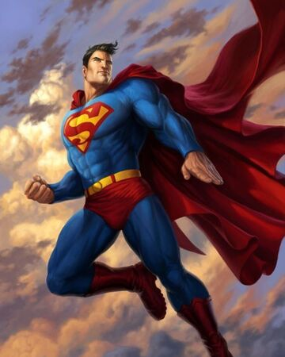

A superhero is a person who does heroic deeds and has the ability to do them in a way that a normal person couldn’t. So in order to be a superhero, you need a power that is more exceptional than any power a normal human being could possess, and you need to use that power to accomplish good deeds. Otherwise, a policeman or a fireman could be considered a superhero.
For instance, a good guy fighting a bad guy could be just a regular police story or detective story or human-interest story. But if it’s a good guy with a superpower who is fighting a bad guy, it becomes a superhero story. If the good guy is doing something that a normal human being couldn’t do, couldn’t accomplish, then I assume he becomes a superhero.
Article on superheroes at OUP blog

Superman
Superman is a fictional superhero, who first appeared in American comic books published by DC Comics.
Superman was born on the planet Krypton and was given the name Kal-El at birth. As a baby, his parents sent him to Earth in a small spaceship moments before Krypton was destroyed in a natural cataclysm. His ship landed in the American countryside, near the fictional town of Smallville. He was found and adopted by farmers Jonathan and Martha Kent, who named him Clark Kent. Clark developed various superhuman abilities, such as incredible strength and impervious skin. His foster parents advised him to use his abilities for the benefit of humanity, and he decided to fight crime as a vigilante. To protect his privacy, he changes into a colorful costume and uses the alias "Superman" when fighting crime. Clark Kent resides in the fictional American city of Metropolis, where he works as a journalist for the Daily Planet. Superman's supporting characters include his love interest and fellow journalist Lois Lane, Daily Planet photographer Jimmy Olsen and editor-in-chief Perry White. Superman has an extensive Rogues Gallery with his arch-enemy being supervillain Lex Luthor.